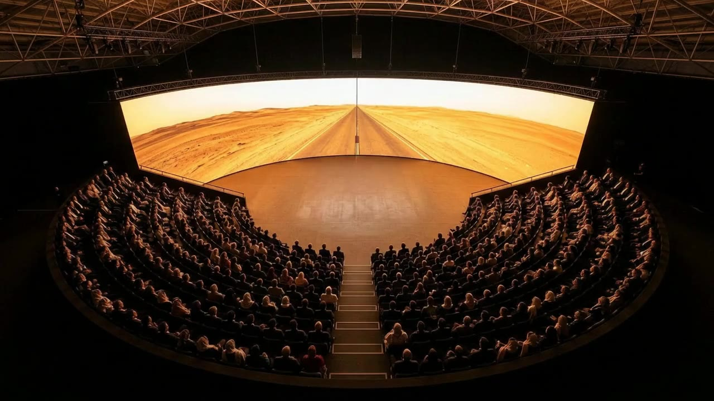

18:30
Check-in foyer
Check-in sits outside the hall: clean, elegant, warm light — and no sign of the city. The hall doors stay closed.

Part 1 of 4 18:30 – 19:40
Check-in, corridor and the city street
Guests begin the night in a city they know every day: grey, crowded and a little smoggy, but alive — with shops that serve them and performances about the city’s air.
18:30
Check-in sits outside the hall: clean, elegant, warm light — and no sign of the city. The hall doors stay closed.
18:35
The doors open onto a narrow corridor of old grey walls, fuse boxes and dead wiring. Light haze, the soft sound of traffic — and neon glowing at the far end.
18:40
A city built inside the hall: grey, crowded, a little smoggy — but alive. The ground floors are shops that serve the guests: pastry, coffee, a tea house, finger food, fresh juice.
19:00
A newspaper seller shouts the air-quality headline, a speaker on a crate talks about the city’s air, a street musician plays. The city’s problem, told with a smile.
10 frames. Select any frame to see it full size.
Check-in is a separate space outside the hall, in front of the main doors: clean and elegant, with a graphite counter and warm light, and no sign of the city. The hall doors stay closed until check-in ends. Each guest gets a coloured card for the north or south rows.
A narrow corridor with old grey walls leads into the city. The street is the social area and standing reception: the ground floors are a pastry shop, coffee, a tea house, finger food and juice; waiters circulate with trays, and a newspaper seller, an air-quality speaker and a street musician perform. The space is grey, but lively with coloured neon.

Next: part 2 of 4The Hybrid Pulse